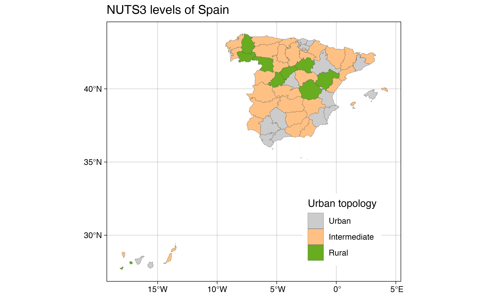

A sf object including all NUTS levels of Spain as provided by
GISCO (2016 version).
Format
A POLYGON data frame (resolution: 1:1million, EPSG:4258) object with
86 rows and fields:
COAST_TYPE: COAST_TYPE
FID: FID
NUTS_NAME: NUTS name on local alphabet
MOUNT_TYPE: MOUNT_TYPE
NAME_LATN: Name on Latin characters
CNTR_CODE: Eurostat Country code
URBN_TYPE: URBN_TYPE
NUTS_ID: NUTS identifier
LEVL_CODE: NUTS level code (0,1,2,3)
geometry: geometry field
Source
https://gisco-services.ec.europa.eu/distribution/v2/nuts/, file
NUTS_RG_20M_2016_4326.geojson.
See also
Other datasets:
esp_codelist,
esp_munic.sf,
leaflet.providersESP.df,
pobmun19
Other nuts:
esp_get_nuts()
Examples
data("esp_nuts.sf")
nuts <- esp_nuts.sf
# Select NUTS 3
nuts3 <- esp_nuts.sf[esp_nuts.sf$LEVL_CODE == 3, ]
# Combine with full shape
spain <- esp_get_country(moveCAN = FALSE)
# Plot Urban Type: See
# https://ec.europa.eu/eurostat/web/rural-development/methodology
library(ggplot2)
nuts3$URBN_TYPE_cat <- as.factor(nuts3$URBN_TYPE)
levels(nuts3$URBN_TYPE_cat)
#> [1] "1" "2" "3"
levels(nuts3$URBN_TYPE_cat) <- c("Urban", "Intermediate", "Rural")
ggplot(nuts3) +
geom_sf(aes(fill = URBN_TYPE_cat), lwd = .1) +
scale_fill_manual(values = c("grey80", "#FFC183", "#68AC20")) +
labs(
title = "NUTS3 levels of Spain",
fill = "Urban topology"
) +
theme_linedraw() +
theme(
legend.position = c(.8, .2)
)
